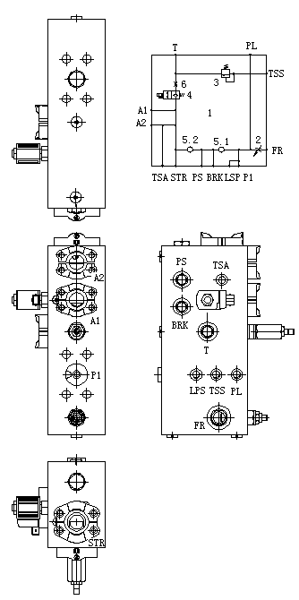

转向组合阀 · STEERING MINIFOLD
1. Корпус блока клапанов управления поворотом 2. Золотник клапана регулирования расхода
3. Предохранительный клапан 4. Дренажный клапан энергоаккумулятора
5. Обратный клапан 6. Дроссельное отверстие
Рис. 1. Принципиальная схема блока клапанов управления поворотом
Блок клапанов управления поворотом
Общие сведения
Если не указано иное, номера позиций в скобках совпадают с номерами позиций на рис. 1.
Прямоугольный блок клапанов управления поворотом состоит из нескольких вставных клапанов с рядом отверстий для подсоединения шлангов, блок клапанов управления поворотом устанавливается над гидравлическим фильтром рулевого управления.
Управление
Блок клапанов управления поворотом - совокупность нескольких клапанов, объединенных общим корпусом, предназначен для непосредственной передачи кинетической энергии к системе рулевого управления, наполнения энергоаккумулятора рулевого управления, в его состав входят следующие части:
1. Корпус блока клапанов управления поворотом - данный корпус прямоугольной формы изготовлен из кованной стали, в нем имеется ряд монтажных отверстий, устанавливаются ряд небольших вставных клапанов, выключателей давления и т.д.
2. Золотник клапана регулирования расхода - если в тормозном трубопроводе устанавливается клапан Venturi, то данный клапан служит для регулирования расхода потока на входе в клапан Venturi, что позволяет осуществлять регулировку противодавления в тормозной магистрали.
3. Предохранительный клапан в блоке клапанов управления поворотом - данный клапан представляет собой вставной перепускной клапан, предназначенный для защиты системы рулевого управления и тормозной системы от разрушения, играет роль клапана сброса избыточного давления, как показывает название - предохранительный клапан, давление срабатывания данного клапана составляет 280 бар.
4. Дренажный клапан энергоаккумулятора - данный клапан представляет собой вставной электромагнитный переключающий клапан с функцией переключения для аварийного ручного управления, после остановки автомобиля данный клапан приводится в действие и дает возможность медленно выпустить рабочую жидкость из энергоаккумулятора.
5. Обратный клапан - он предназначен для предотвращения движения рабочей жидкости в энергоаккумуляторе рулевого управления в обратном направлении, чтобы защитить гидронасос и соответствующие элементы от повреждений.
6. Дроссельное отверстие - оно играет роль в замедлении скорости спуска рабочей жидкости из энергоаккумулятора, данное дроссельное отверстие является фиксированным, как правило, не требует регулировки.
В состав блока клапанов управления поворотом входит ряд отверстий для подсоединения трубопроводов, ниже приведено краткое описание:
1. Маслоподводящее отверстие (P1) - данное отверстие соединяется с выходным отверстием фильтра рулевого управления.
2. Отверстие под переключатель давления в системе рулевого управления (LSP) - данное отверстие используется для установки переключателя низкого давления в системе рулевого управления, предназначенного для предупреждения о падении давления в системе рулевого управления до критического значения.
3. Отверстие для подсоединения тормозной системы (BRK) - масло под давлением из тормозной системы проходит через данное отверстие.
4. Отверстие для подвода масла под давлением (PS) - в случае возникновения неисправности насоса рулевого управления, возможен подвод масла под давлением по внешнему трубопроводу в систему рулевого управления через данное отверстие, чтобы обеспечить нормальное движение автомобиля.
5. Выходное отверстие системы рулевого управления (STR) - масло под давлением через данное отверстие поступает в усилитель потока, чтобы совершить поворот автомобиля.
6. Отверстие для подсоединения манометра системы рулевого управления (TSA) – данное отверстие используется для подсоединения манометра системы рулевого управления, манометр расположен в гидравлическом блоке управления в задней части кабины.
7. Отверстия для подсоединения энергоаккумулятора (A1 и A2) - данные два отверстия соединяются с энергоаккумулятором рулевого управления.
8. Перепускное отверстие (T) - данное отверстие соединяется с гидробаком.
9. Отверстие для подсоединения системы подъема (PL) - масло подается через данное отверстие в систему сервопривода подъема.
10. Резервное отверстие для измерения давления (TSS) - данное резервное отверстие используется для измерения давления в системе и закрыто пробкой.
11. Питающее отверстие клапана Venturi (FR), данное отверстие соединяется с маслоподводящим отверстием клапана Venturi, если система не оснащена клапаном Venturi, то данное отверстие обычно закрыто пробкой.
Техническое обслуживание и осмотр
Периодическое техническое обслуживание должно включать следующие виды работ:
1. Проверить все вставные клапаны и пробки на наличие утечек масел, в случае обнаружения проблем, следует своевременно устранить проблемы.
2. Проверить все электромагниты и разъем жгута проводов на наличие ослабления и выпадения, в случае обнаружения проблем, следует своевременно устранить проблемы.
3. Проверить блок клапанов на наличие трещин, в случае обнаружения трещин, следует своевременно заменить.
Функциональные испытания
Функциональные испытания системы производятся в следующем порядке:
1. Остановить автомобиль в безопасном месте, включить стояночный тормоз, подложить клинья под колеса во избежание случайного перемещения автомобиля.
2. Выключить двигатель и полностью сбросить остаточное давление в системе, убедиться в нахождении рычага управления подъемом в нейтральном положении, полном соприкосновении кузова с рамой.
3. Убедиться в правильном прохождении испытаний и регулирования системы рулевого управления.
4. Проверить все шланги и штуцеры, затянуть их в соответствии с порядком, указанным в части «Дополнения».
5. Убедиться в применении указанного гидравлического масла и правильном уровне масла в гидробаке карьерного самосвала.
6. Испытания предохранительного клапана в блоке клапанов управления поворотом (1) производится в следующем порядке:
a. Остановить автомобиль в безопасном месте, включить стояночный тормоз, подложить клинья под колеса во избежание случайного перемещения автомобиля;
b. присоединить гидравлический манометр с подходящим диапазоном измерений к отверстию (TSS) блока клапанов управления поворотом;
c. убедиться в нахождении рычага селектора в нейтральном положении и работе двигателя на низких оборотах холостого хода;
d. нажать на педаль акселератора до момента погашения сигнализатора низкого давления в системе рулевого управления;
e. поворачивать рулевое колесо в крайне левое положение, нажать на педаль акселератора до упора, наблюдать за показаниями манометра, значение должно быть не более 4000 фунтов/кв. дюйм (28000 кПа);
f. поворачивать рулевое колесо в крайне правое положение, наблюдать за показаниями манометра, значение должно быть не более 4000 фунтов/кв. дюйм (28000 кПа).
7. Завершить испытания.
Отсоединить манометр от отверстия (TSS) блока клапанов управления поворотом.
Устранение неисправностей
ВопросыВозможная причинаМетод устраненияСлишком низкое давление в системе рулевого управленияНенадлежащее установочное давление предохранительного клапанаПовторно отрегулироватьПовреждение предохранительного клапанаОтремонтировать или заменить золотник предохранительного клапанаНенадлежащее установочное давление клапана наполненияПовторно отрегулироватьПовреждение клапана наполненияОтремонтировать или заменить золотник предохранительного клапанаПовреждение электромагнитного клапана пуска без нагрузкиОтремонтировать или заменить золотник электромагнитного клапана пуска без нагрузкиПовреждение челночного клапанаОтремонтировать или заменить золотник челночного клапанаСлишком высокое давление в системе рулевого управленияНенадлежащее установочное давление предохранительного клапанаПовторно отрегулироватьПовреждение предохранительного клапанаОтремонтировать или заменить золотник предохранительного клапанаНенадлежащее установочное давление клапана наполненияПовторно отрегулироватьПовреждение клапана наполненияОтремонтировать или заменить золотник предохранительного клапанаНевозможность нормальной разгрузки энергоаккумулятора после остановки автомобиляПовреждение разгрузочного клапанаОтремонтировать или заменить золотника разгрузочного клапанаНенадлежащая регулировка или повреждение реле выдержки времениОтремонтировать или заменить реле выдержки времениФункциональный отказ при пуске без нагрузкиПовреждение электромагнитного клапана пуска без нагрузкиОтремонтировать или заменить золотник электромагнитного клапана пуска без нагрузкиЧрезмерная интенсивность наполнения энергоаккумулятораНенадлежащая регулировка или повреждение клапана наполненияОтремонтировать или заменить золотник клапана наполнения
2
2 SMC014 7-01
SMC014 7-01 1
Система рулевого управления - блок клапанов управления поворотом
050-0150
2
Гидравлическая система– блок клапанов управления поворотом
050-0150
Гидравлическая система– блок клапанов управления поворотом
050-0150
2
65
Гидравлическая система– блок клапанов управления поворотом
050-0150
3
Дополнения - Масса компонентов
200-0090
Дополнения - Масса компонентов
200-0090
40
3
Дополнения - Масса компонентов
200-0090
5
5
4
3
2
1
Иллюстрации
